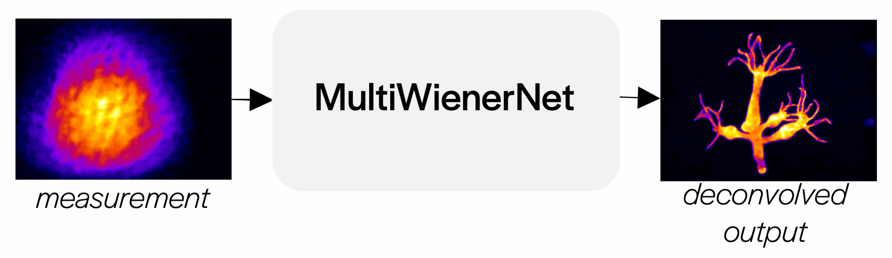

Deep learning for fast spatially-varying deconvolution
Kyrollos Yanny*, Kristina Monakhova*, Richard Shuai, and Laura Waller
Abstract
Deconvolution can be used to obtain sharp images or volumes from blurry or encoded measurements in imaging systems. Given knowledge of the system’s point spread function (PSF) over the field-of-view, a reconstruction algorithm can be used to recover a clear image or volume. Most deconvolution algorithms assume shift-invariance; however, in realistic systems, the PSF varies laterally and axially across the field-of-view, due to aberrations or design. Shift-varying models can be used, but are often slow and computationally intensive. In this work, we propose a deep learning-based approach that leverages knowledge about the system’s spatially-varying PSFs for fast 2D and 3D reconstructions. Our approach, termed MultiWienerNet, uses multiple differentiable Wiener filters paired with a convolutional neural network to incorporate spatial-variance. Trained using simulated data and tested on experimental data, our approach offers a 625 − 1600× speed-up compared to iterative methods with a spatially-varying model, and outperforms existing deep-learning based methods that assume shift invariance.
Resources
- Open source code: here
- Paper in Optica: here
- Miniscope3D code and project page
Method overview
Calibration
We need to calibrate the network for each new microscope or imaging system. To calibrate, we scan a bead across the field of view of the microscope and capture point spread functions (PSFs).

Dataset creation
With our calibrated PSFs, we can create a forward model for our microscope and use this to generate training data for our network.

Training
We initialize our network filters with a subset of our measured PSFs. The network performs a Wiener deconvolution step for each filter, then combines the intermediate images into the final deconvoled image. The parameters of the network are updated to minimize the loss between the deconvolved image and the ground truth image over the entire dataset.

Fast deconvolutions
After training, we can use our deconvolution network on real data!
Our method works for 2D deconvolutions, as well as compressive 3D deconvolutions in which a 3D volume is recovered from a 2D measurement.